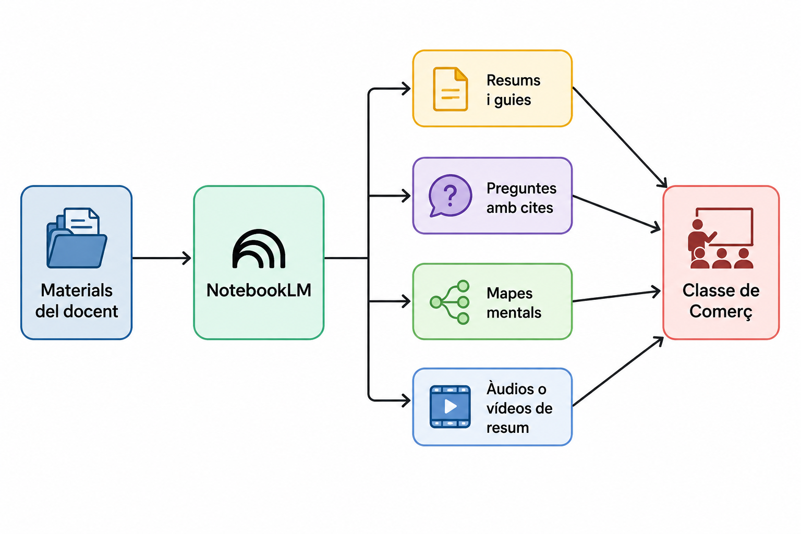
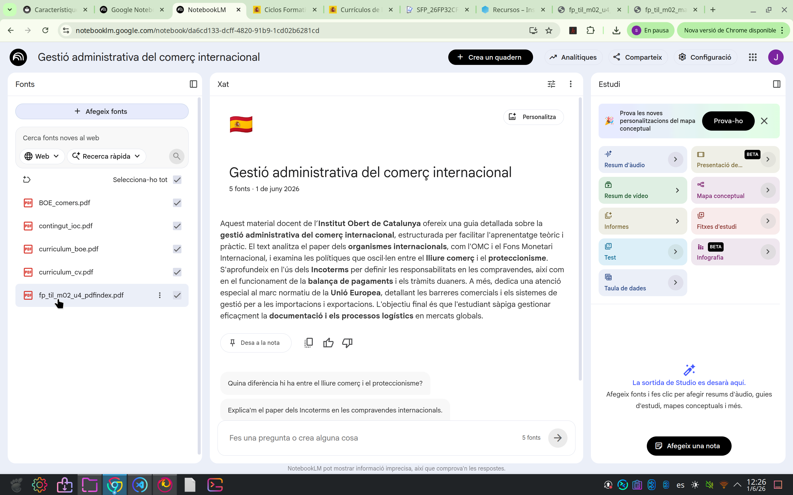
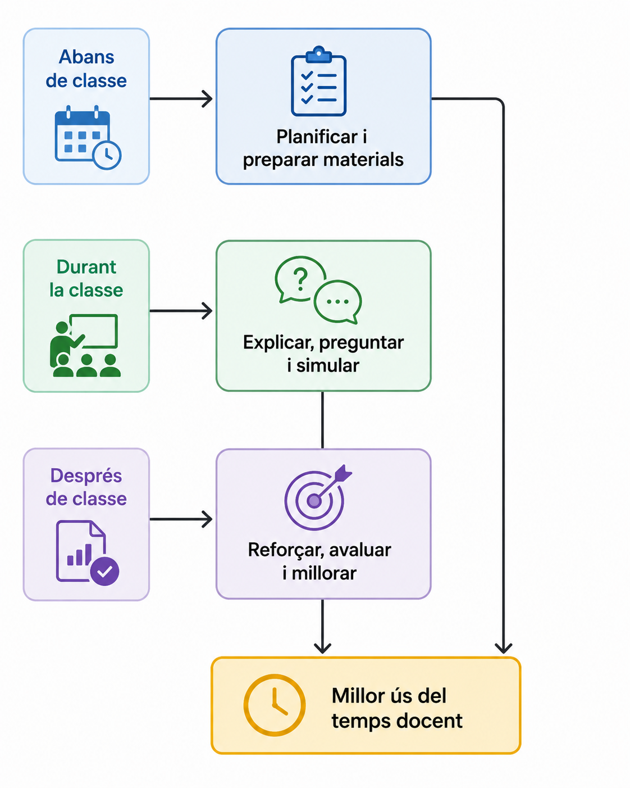
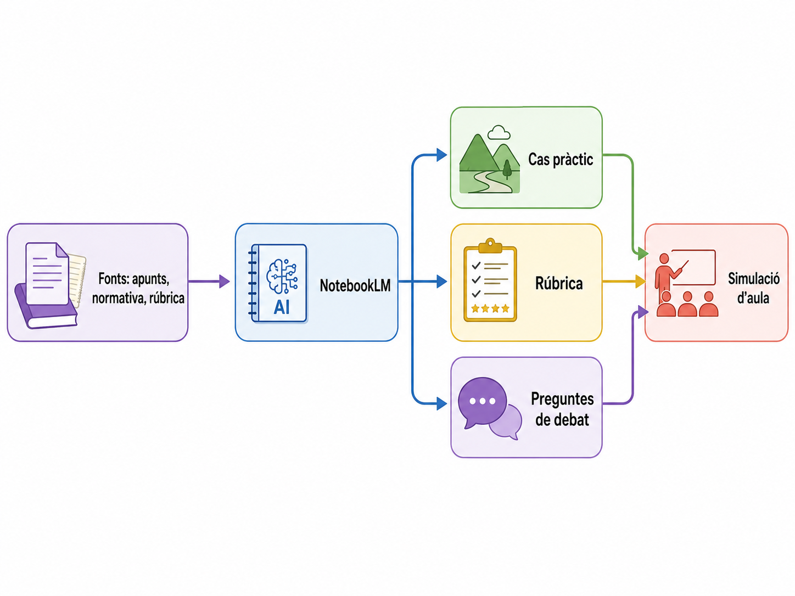

NotebookLM: característiques principals per al professorat de Comerç
NotebookLM és una ferramenta de Google pensada per a treballar amb fonts pròpies: apunts, PDFs, documents, presentacions, webs o materials del centre. A diferència d'una IA genèrica, la seua utilitat principal és que respon i genera materials a partir dels documents que li aportem, mostrant cites i referències per poder revisar d'on ix cada idea.
Idea clau
NotebookLM pot actuar com un assistent de lectura, síntesi i preparació docent. No substitueix el criteri del professorat, però ajuda a convertir materials llargs en explicacions, activitats, preguntes, esquemes i recursos per a classe.
1. Què fa NotebookLM?

En la pràctica, el docent crea un quadern, puja les fonts i després pot demanar-li tasques concretes:
- Resumir una unitat o normativa.
- Explicar conceptes amb un nivell adequat per a FP.
- Crear preguntes de comprensió.
- Generar una guia d'estudi.
- Preparar un briefing o document de síntesi.
- Fer un mapa mental dels continguts.
- Crear un resum en àudio o vídeo a partir de les fonts.
Afegim recursos
Notebook LM ens demana que li pugem els recursos i enllaços web per a generar material.

2. Característiques principals
| Característica | Què aporta | Exemple en Comerç i Màrqueting |
|---|---|---|
| Treball amb fonts pròpies | Les respostes es basen en els materials pujats pel docent. | Pujar apunts sobre aparadorisme, marxandatge o atenció al client. |
| Cites i referències | Permet comprovar d'on ix la informació. | Revisar si una resposta sobre drets del consumidor prové del document correcte. |
| Xat amb els documents | Es poden fer preguntes directes sobre els materials. | "Quins criteris s'han d'avaluar en una simulació de venda?" |
| Guies i resums | Converteix documents extensos en esquemes més manejables. | Crear una guia per estudiar una unitat de promocions comercials. |
| Mapes mentals | Mostra relacions entre idees de forma visual. | Relacionar client, necessitat, argumentari, objecció i tancament de venda. |
| Resums d'àudio o vídeo | Transforma les fonts en explicacions escoltables o visuals. | Preparar un repàs breu abans d'una prova o per a alumnat absent. |
3. Com pot ajudar en la tasca docent?
Abans de classe
NotebookLM pot reduir el temps de preparació inicial. Per exemple, el professorat pot pujar una programació, una unitat didàctica o un manual i demanar:
- Una explicació de 10 minuts sobre el contingut essencial.
- Una llista de conceptes clau amb exemples de botiga, magatzem o comerç en línia.
- Tres activitats pràctiques adaptades al nivell del grup.
- Preguntes inicials per activar coneixements previs.
Prompt útil
Durant la classe
Pot servir com a suport per explicar el mateix contingut de diverses maneres:
- Reformular una explicació amb vocabulari més senzill.
- Crear exemples relacionats amb supermercats, botigues de moda, logística o e-commerce.
- Generar preguntes ràpides per comprovar si s'ha entés.
- Preparar rols per a simulacions: client indecís, client molest, venedor, encarregat o proveïdor.
Després de classe
També pot ajudar a revisar i millorar materials:
- Crear activitats de reforç a partir dels errors detectats.
- Preparar una rúbrica per a una pràctica de venda.
- Fer una guia d'estudi abans d'un examen.
- Elaborar un resum per a alumnat que ha faltat.

4. Exemple concret per a Comerç
- Pugem a NotebookLM els apunts del tema, la normativa bàsica, una fitxa de procediment intern i una rúbrica.
- Li demanem un resum dels passos principals.
- Li demanem un cas pràctic amb un client, una incidència i documentació comercial.
- Li demanem preguntes per al debat final.
- Revisem el resultat i ajustem llenguatge, durada i criteris d'avaluació.

Aplicació directa
Per al professorat de Comerç, NotebookLM és especialment útil quan els materials són llargs o dispersos: manuals, normatives, procediments, dossiers d'empresa, catàlegs, fitxes de producte o documentació logística.
Vegem que pot fer amb aquest Prompt
Prompt
Resultat no esperat
Segurament el contingut de la presentació no és l'esperat. Cal ser més concrets en la documentació i el que li demanem a la IA
Altre prompt
| Text Only | |
|---|---|
Cal seguir "afinant" el resultat però ja tenim un document més concret i utilitzable.
5. Precaucions importants
- Cal revisar sempre el resultat: pot resumir malament, ometre matisos o interpretar una font de manera incompleta.
- No convé pujar dades personals d'alumnat, qualificacions, informes sensibles o informació confidencial d'empreses.
- En continguts legals, laborals, fiscals o de consum, cal contrastar amb fonts oficials actualitzades.
- El millor ús és demanar esborranys, alternatives i adaptacions, no copiar el resultat sense supervisió.